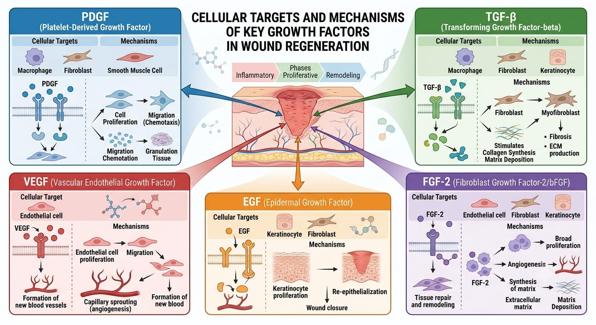

Wound healing is a highly orchestrated biological process requiring precise communication between varied cell types, the extracellular matrix (ECM), and the local microenvironment. The master regulators of this complex cellular dialogue are Growth Factors (GFs) and cytokines. These potent, naturally occurring polypeptides act as molecular messengers, binding to specific transmembrane receptors on target cells to trigger intracellular signaling cascades that drive cell survival, proliferation, migration, and differentiation.
In acute wounds, growth factors are released in a highly controlled, spatio-temporal sequence. Immediately following tissue injury, degranulating platelets release a massive initial wave of signaling molecules to initiate hemostasis and recruit inflammatory cells. As healing progresses into the proliferative phase, macrophages and fibroblasts become the primary factories for GF synthesis, sustaining the regenerative effort.

As illustrated in Fig ix, the transition from the inflammatory phase to the proliferative and remodeling phases is heavily dependent on specific growth factor profiles. Each phase is dominated by a distinct biochemical signature.
A deficiency or imbalance in these biochemical signals—a hallmark of chronic, non-healing wounds such as diabetic foot ulcers and venous stasis ulcers—results in a stalled, hyper-inflammatory state. In these pathological environments, cellular senescence and elevated matrix metalloproteinase (MMP) activity aggressively degrade both the extracellular matrix and the essential endogenous growth factors themselves, trapping the wound in a vicious cycle of tissue destruction.
Understanding the specific roles of individual growth factors has allowed researchers to develop targeted biological therapies. By delivering recombinant human growth factors directly into a wound bed, clinicians can artificially kickstart the stalled proliferative phases of chronic wounds. The following table summarizes the most critical growth factors involved in wound repair and their specific physiological mechanisms.
| Growth Factor | Cellular Source | Primary Physiological Function | Clinical Target |
|---|---|---|---|
| PDGF (Platelet-Derived Growth Factor) |
Platelets, macrophages, endothelial cells. | Strong mitogen and chemoattractant. Stimulates fibroblast proliferation and ECM deposition. | Approved clinically (Becaplermin) for the treatment of chronic lower extremity diabetic ulcers. |
| VEGF (Vascular Endothelial GF) |
Keratinocytes, macrophages, fibroblasts. | Master regulator of angiogenesis. Promotes endothelial cell migration and capillary formation. | Critical for overcoming hypoxia in ischemic wounds and ensuring graft survival. |
| TGF-β (Transforming Growth Factor-beta) |
Platelets, T-cells, macrophages. | Promotes myofibroblast differentiation and massive collagen synthesis. Regulates inflammation. | Essential for matrix repair, though excessive TGF-β activity leads to hypertrophic scarring. |
| EGF (Epidermal Growth Factor) |
Platelets, macrophages. | Potent stimulator of keratinocyte migration and proliferation over the dermal matrix. | Accelerates epithelialization and wound closure in partial-thickness burns. |
While topical recombinant growth factors show high efficacy, their clinical use is hindered by chronic wound microenvironments, where proteolytic enzymes rapidly degrade unprotected proteins. To overcome this, modern tissue engineering encapsulates these fragile molecules within biodegradable nanoparticles and smart hydrogels. These advanced delivery vehicles protect the growth factors from premature degradation and ensure a sustained, physiological release, successfully pushing chronic wounds toward functional closure.